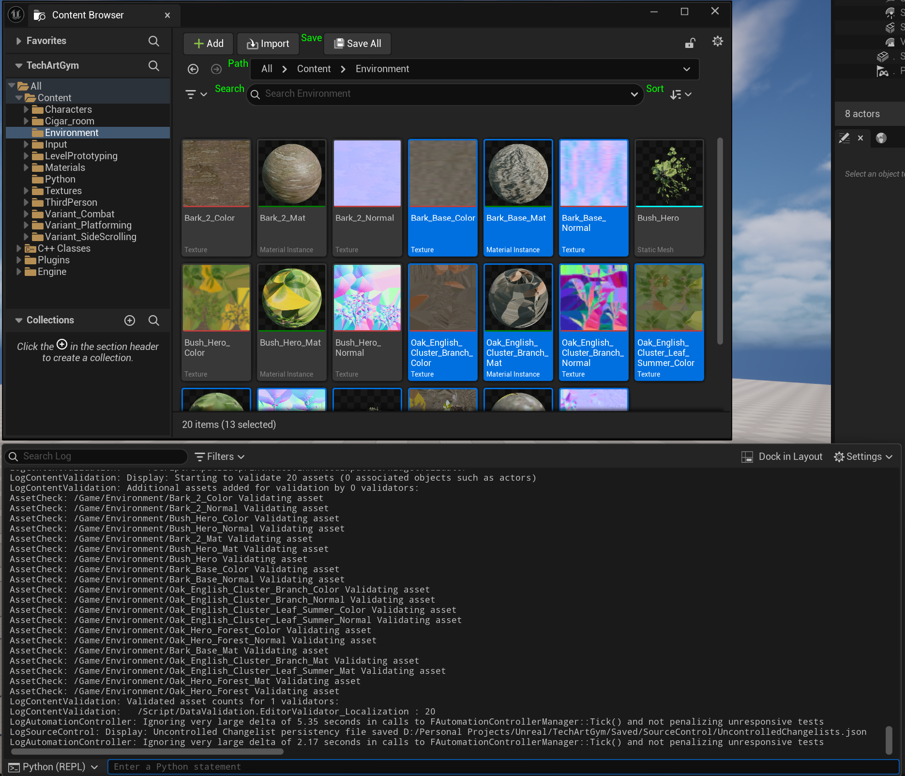

A4 Batch Import FBX Meshes in Unreal with Python
Original note · Unmodified Markdown snapshot
https://www.youtube.com/watch?v=Ue5SyNc1nKg&list=PLKgYiIAqG99cwlb4Y2Pu-cSb_Vw14-t0c&index=9
from pathlib import Path
from typing import List
import unreal
destination_path = "/Game/Environment"
source_path = r"D:\Personal Projects\Unreal\TechArtGym\Example_Meshes"
assets_to_import = list(Path(source_path).glob("*.fbx"))
static_mesh_import_data = unreal.FbxStaticMeshImportData()
static_mesh_import_data.combine_meshes = True
static_mesh_import_data.remove_degenerates = True
options = unreal.FbxImportUI()
options.import_mesh = True
options.import_textures = True
options.import_materials = True
options.automated_import_should_detect_type = True
options.static_mesh_import_data = static_mesh_import_data
tasks = unreal.Array(unreal.AssetImportTask)
for input_file_path in assets_to_import:
task = unreal.AssetImportTask()
task.automated = True
task.destination_path = destination_path
task.destination_name = input_file_path.stem
task.filename = str(input_file_path)
task.replace_existing = True
task.save = True
task.options = options
tasks.append(task)
unreal.AssetToolsHelpers.get_asset_tools().import_asset_tasks(tasks)
for task in tasks:
for path in task.imported_objects_paths:
print(f"Imported: {path}")
Alternative solution:
from pathlib import Path
from typing import List
import unreal
destination_path = "/Game/Environment"
source_path = r"D:\Personal Projects\Unreal\TechArtGym\Example_Meshes"
assets_to_import = list(Path(source_path).glob("*.fbx"))
static_mesh_import_data = unreal.FbxStaticMeshImportData()
static_mesh_import_data.combine_meshes = True
static_mesh_import_data.remove_degenerates = True
options = unreal.FbxImportUI()
options.import_mesh = True
options.import_textures = True
options.import_materials = True
options.automated_import_should_detect_type = True
options.static_mesh_import_data = static_mesh_import_data
tasks: List[unreal.AssetImportTask] = []
for input_file_path in assets_to_import:
task = unreal.AssetImportTask()
task.automated = True
task.destination_path = destination_path
task.destination_name = input_file_path.stem
task.filename = str(input_file_path)
task.replace_existing = True
task.save = True
task.options = options
tasks.append(task)
unreal.AssetToolsHelpers.get_asset_tools().import_asset_tasks(unreal.Array.cast(unreal.AssetImportTask, tasks))
for task in tasks:
for path in task.imported_objects_paths:
print(f"Imported: {path}")
Best way to run: exec(open(r"D:\Personal Projects\Unreal\TechArtGym.vscode\batch_fbx_import.py").read())
NOTE! Use rglob if nested folders/directories, r=recursive
SUCCESS!
